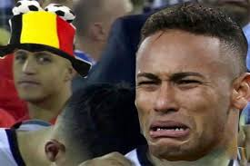

Inicio
¿Quién es Alexis Sánchez?
Alexis Alejandro Sánchez Sánchez, nacido en Tocopilla en 1988, es uno de los futbolistas más emblemáticos de Chile. Apodado “El Niño Maravilla”, ha sido clave tanto en clubes europeos como en la selección chilena.
Trayectoria
Cobreloa
Debut profesional a los 16 años.
Colo-Colo
Se convirtió en figura decisiva en Chile.
River Plate
Evolución futbolística en Argentina.
Udinese
Su primer gran salto a Europa.
Arsenal
Época estelar en la Premier League.
Manchester United
Desafío en Inglaterra con altibajos.
Inter de Milán
Recuperó su nivel y ganó la Serie A.
Marsella
Brilló en la Ligue 1 francesa.
Udinese (actual)
Regresó en 2023 al club que lo lanzó a Europa.
Logros
Copa América 2015
Campeón con Chile.
Copa América 2016
Campeón y figura del torneo.
FA Cup 2015
Título con Arsenal.
Serie A 2021
Con Inter de Milán.
Memes
Meme "Niño Maravilla"
Meme Celebración
